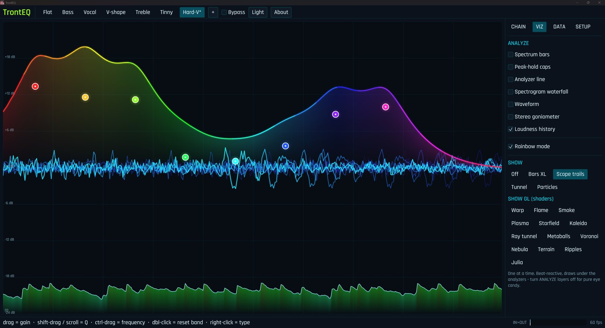
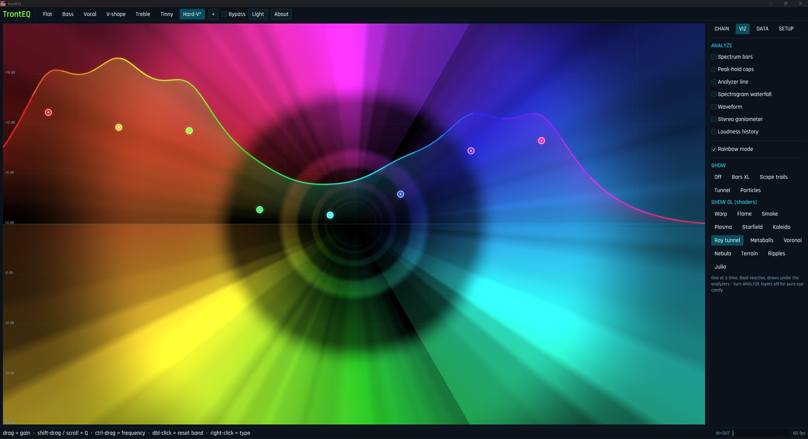
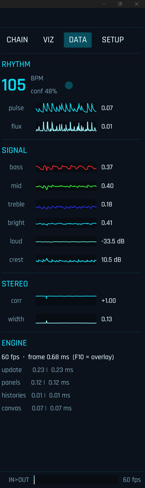

Grab a band. Hear it move.
Eight draggable nodes over a live spectrum. Drag for gain, scroll for Q, ctrl-drag for frequency, right-click to swap between peak, shelf, pass, notch and all-pass filters. It runs as a custom Audio Processing Object inside Windows itself, so the change lands on whatever is already playing, right now.
Underneath the EQ sits a full chain: preamp, compressor, brickwall limiter, and an auto-loudness stage for when a stream is too quiet or a game is too loud.

It's a visualizer
hiding in an EQ.
Thirteen beat-reactive visual modes, from stacked spectrum bars to a full OpenGL shader engine: warp, flame, smoke, plasma, a raymarched tunnel, terrain built from lines of your own audio. Turn the analyzer layers off and let it run as pure eye candy on a second monitor.

It reads the room.
A live readout of everything flowing through: real-time BPM with a beat blinker, a spectral pulse and flux, bass / mid / treble / brightness, loudness in dB, crest factor, and stereo correlation and width. Every signal draws its own four-second sparkline, so you can watch the mix breathe.

Now it can bend time.
When a stream drifts and the audio lands ahead of the picture, one amber knob pulls it back. Delay the whole system output by up to two seconds, nudge it in five-millisecond steps until the lips line up, and leave it. At zero it does nothing at all: the zero-latency path stays byte-for-byte untouched, so you only pay for the delay when you ask for it.